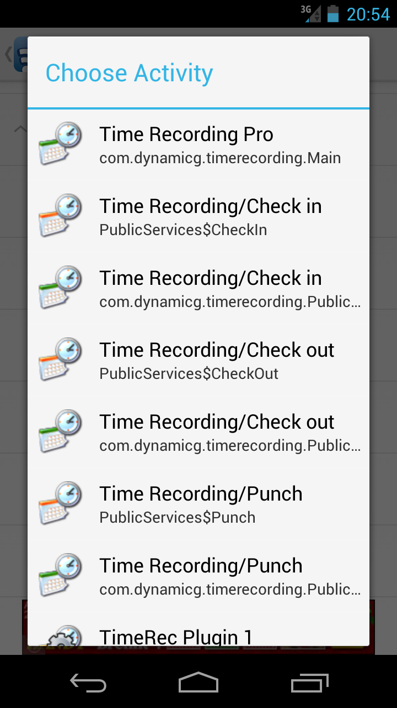

Time Recording - NFC Setup
NFC Automation can be set up using one of these apps. We suggest you try "Trigger" first as it has a larger user base and supports non-NFC events as well.
Trigger
• Install Trigger
• Create a new trigger, then assign the according "Time Recording" or "Time Recording Pro" action
• Note the three actions "...PublicServices$CheckIn", "...PublicServices$CheckOut" and "...PublicServices$Punch" which dispatch the according action
AnyTAG NFC Launcher
• Install AnyTAG NFC Launcher
• Open the NFC app
• "Scan tag"
• Click the (+) icon in the window title
• On the "New task" screen pick "Intent / Launch an Activity"
• Select one of the Time Recording activities:

>